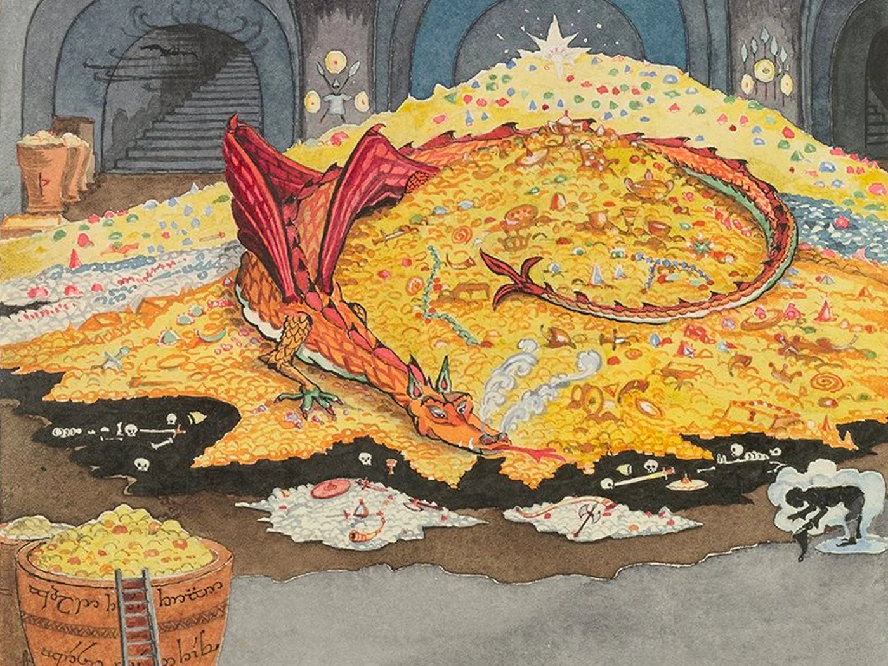
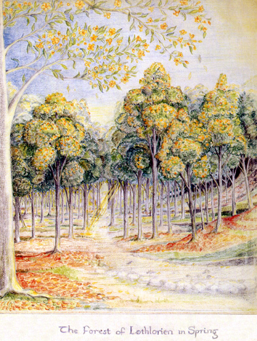
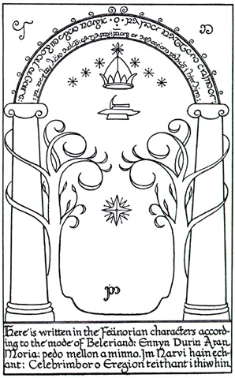
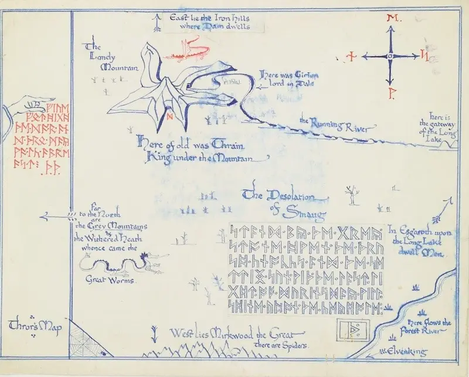
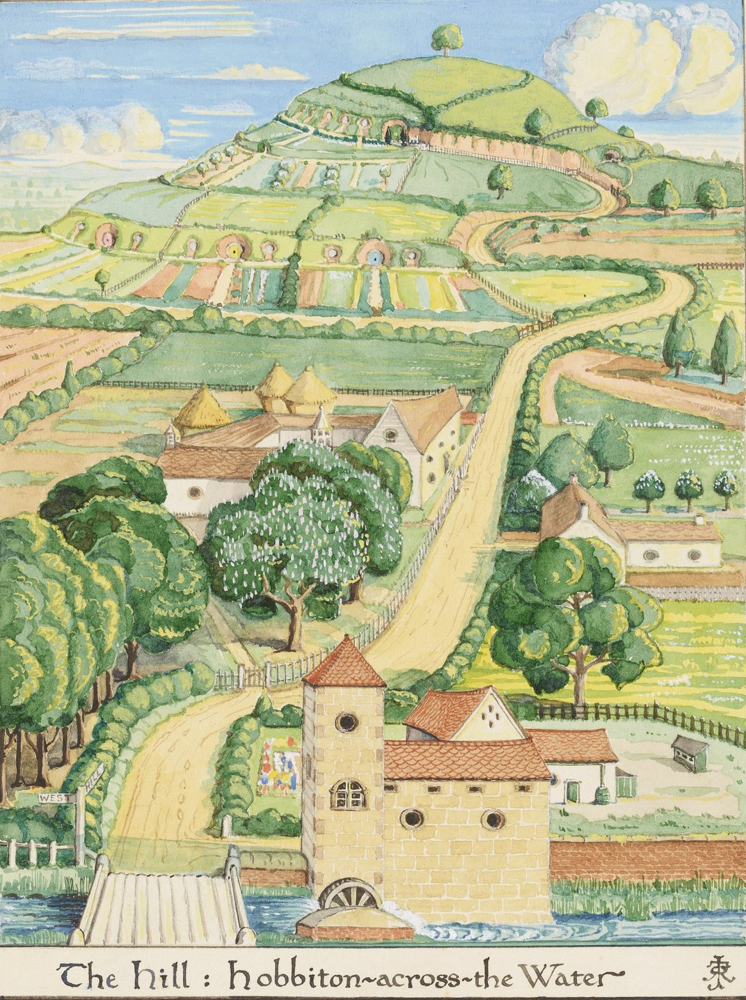
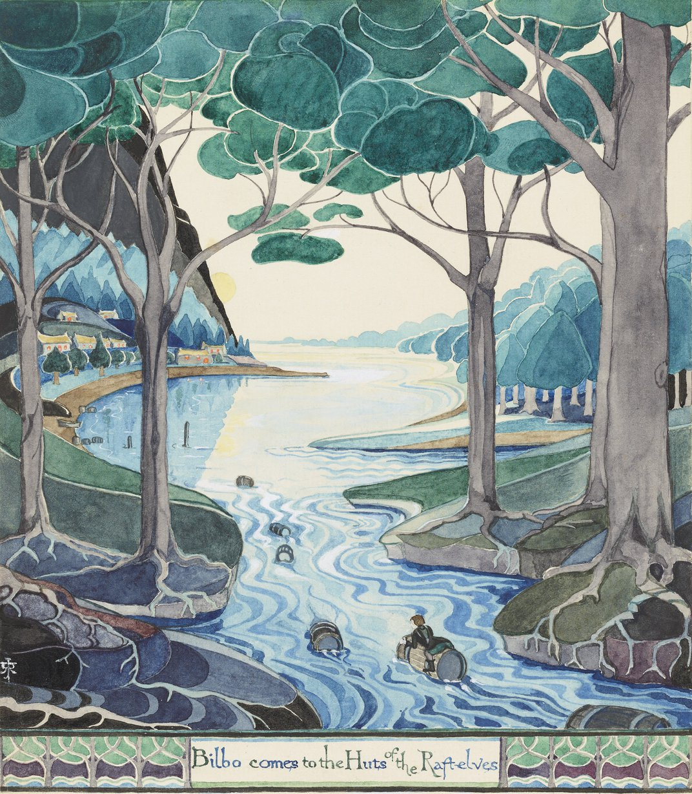

Illustrations
J.R.R. Tolkien combined his academic training in languages and his love of storytelling to create Middle-earth, a fictional continent populated by wizards, elves, orcs, dragons, hobbits, talking trees and other mythical creatures. Below, some of the sketches and paintings that show Middle-earth (and beyond!) as Tolkien himself envisioned it.

J.R.R. Tolkien, Conversation With Smaug, July 1937
Read More

The forest of Lothlorien in Spring
Read More

The doors of Durin and the gates of Moria, "Speak friend, and enter"
Read More

J.R.R. Tolkien, The final version of Thror's map, 1936
Read More

A black and white version of this illustration appeared in the original Hobbit; not long after, J.R.R. Tolkien revised the picture and published a color version in the first American edition of the book. The Hill: Hobbiton-across-the-Water, August 1937
Read More
